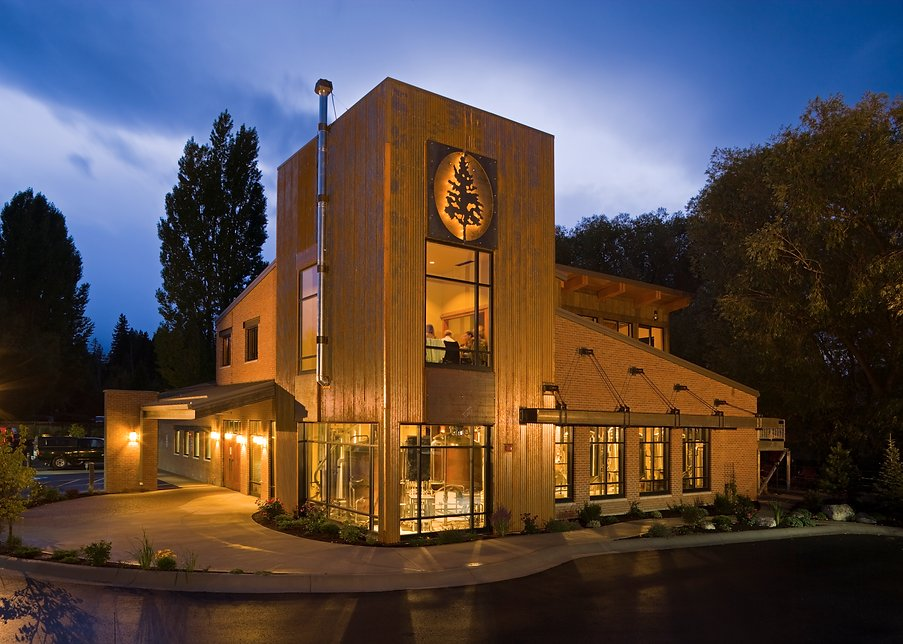

There are a variety of different resturants within the Flathead Lake area. Some of these local favorites include the Tamarack Alehouse and Grill, Rollins Restauraunt and RV park, The Shoe, anf Finley Point Grill among many others. Some of these restaurants are open for just breakfast, while others are open for lunch and dinner meals. Whether you are looking for a nice bar and grill, or a kid friendly restaurant, the area surrounding Flathead Lake has it all. Along with sit down restaurants, there are numerous coffee shops and bakeries that are great for grabbing a drink or sweet treat.
